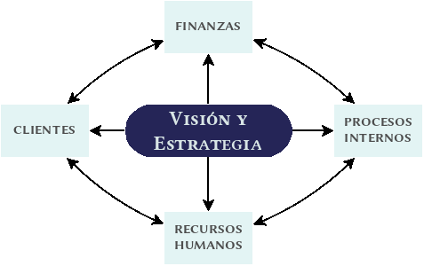

Este artículo es un resumen de [BIL2013] , capítulo 2, epígrafe III
Cuadro de mando integral
Concepto desarrollado en [KAP1992], consiste en una serie de indicadores financieros y no financieros clasificados en cuatro bloques, cuyo objetivo es medir los resultados de la organización.
Perspectiva financiera
¿Qué debemos dar a nuestros accionistas para lograr el éxito financiero?
- Objetivos:
- Búsqueda de valor para el accionista
- Medidas concretas:
- Crecimiento y diversificación de ingresos
- Reducción de costes
- Utilización de activos
- Rentabilidad de los recursos propios y de los activos
Perspectiva del cliente
¿Qué debemos dar a nuestros clientes para satisfacer nuestros objetivos estratégicos?
- Objetivos:
- Búsqueda de valor para el cliente
- Satisfacción del cliente
- Posicionamiento del mercado
- Medidas concretas:
- Cuota de mercado
- Incremento de cliente
- Satisfacción de cliente
- Rentabilidad de clientes
Perspectiva de procesos internos
¿En que procesos internos debemos ser excelentes para satisfacer a nuestros clientes y accionistas?
- Objetivos:
- Búsqueda de valor en los procesos
- Eficiencia
- Medidas concretas:
- Innovación y mejora de los procesos
- Tiempos de los procesos
- Calidad de los procesos
- Coste de los procesos
Perspectiva de recursos humanos
¿Cómo podemos seguir mejorando y crear valor? Los valores de este bloque actúan como palanca para el resto de perspectivas.
- Objetivos:
- Búsqueda de valor en los profesionales de la empresa.
- Capital intelectual
- Medidas concretas:
- Productividad de los empleados
- Retención de empleados
- Clima laboral
- Capacidades de los empleados
Mapa estratégico
En [KAP2000], Kaplan y Norton desarrollan el concepto de mapa estratégico como una analogía militar. Los mapas estratégicos permiten describir de forma clara los objetivos, iniciativas, medidas e interrelaciones de todas las piezas de la estrategia, es decir, procuran mostrar como se pueden convertir las iniciativas y recursos en objetivos tangibles.
¿Por que son necesarios?
En la era industrial, la economía se basaba en activos tangibles, mientras que en la era de la información, las empresas deben crear y utilizar activos intangibles, que aunque sean una fuente indudable de ventaja competitiva, no existen herramientas para describirlos y mostrar como pueden crear valor.
¿Cómo se diseña un mapa estratégico?
- Visión y Estrategia
Un mapa estratégico debe comenzar a diseñarse de arriba a abajo, empezando con el lugar de destino y describiendo los caminos que llevarán a tal punto.
- Perspectiva financiera
Una vez establecido el objetivo general, el mapa continuará con la estrategia financiera para crear valor para el accionista. Las empresas usan dos palancas: crecimiento de ingresos y productividad.
La estrategia de crecimiento tiene dos partes: incrementar los ingresos procedentes de nuevos recursos y la rentabilidad de la clientela actual.
La estrategia de productividad tiene dos partes: una mejora de la estructura de costes y una utilización efectiva de los activos.
- Perspectiva de los clientes
Define como la empresa se diferencia de la competencia en lo que se refiere a atraer, retener y profundizar las relaciones con los clientes.
- Perspectiva de procesos internos
La perspectiva de procesos internos se desarrolla en cuatro fases:
- Aumenta la ventaja innovando con nuevos productos y penetrando en nuevos mercados.
- Aumenta el valor de la clientela profundizando las relaciones con ella.
- Consigue la excelencia operativa
- Establece buenas relaciones con stakeholders
- Perspectiva de aprendizaje y crecimiento
Define las competencias básicas, la tecnología y la cultura corporativa necesaria para afianzar la estrategia de la empresa.
Los mapas estratégicos ayudarán a la organización a contemplar su estrategia de un modo integrado y sistemático y ofrecen la posibilidad de comunicar la estrategia a toda la organización. La estrategia implica el movimiento de una organización desde su posición actual a una posición incierta del futuro. El mapa estratégico contribuye a señalar las causas y los efectos de un modo explícito.
Referencias
| [BIL2013] | Paloma Bilbao, et al (2013), Política de Empresa y Estrategia, 3ªEd., Editorial Universitas |
| [KAP1992] | Kaplan y Norton (1992), The Balanced Scoreboard: Measures that Drive Performance, Harvard Business Review, vol. 70, n. 1, pp. 71-79 |
| [KAP2000] | Kaplan y Norton (2000), Having Trouble with Your Strategy? Then Map It, Harvard Business Review, vol. 78, n. 5, pp. 167-176 |
Comments
comments powered by Disqus